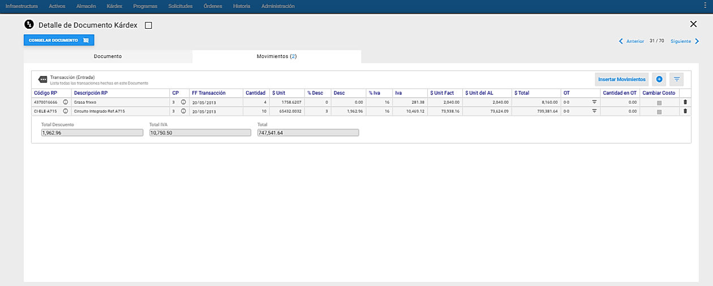
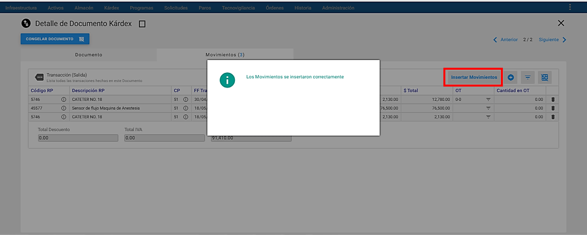
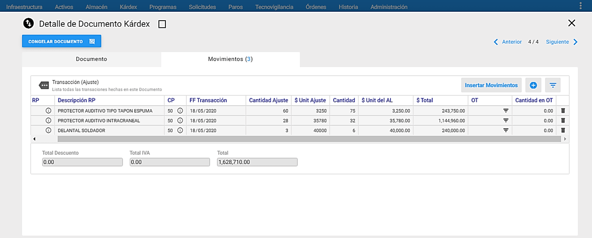
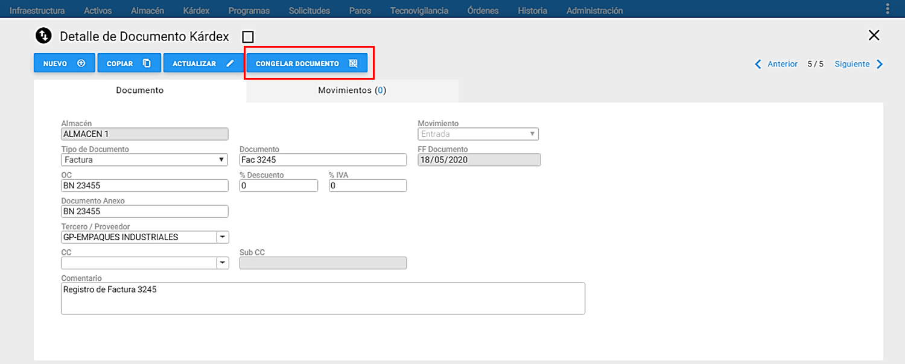
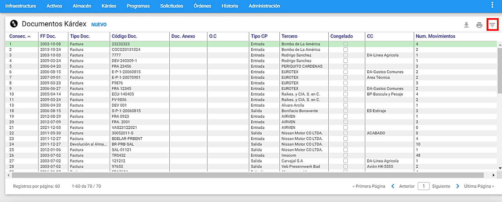

Ventana Detalle Movimientos de Kárdex
 Imagen 4. Kárdex - Ventana Detalle Movimientos
Imagen 4. Kárdex - Ventana Detalle Movimientos
A esta ventana se llega haciendo clic sobre la pestaña “Movimientos” ubicada al lado derecho de la pestaña principal “Documentos” en un registro de Kárdex. A través de ella se ejecutan todas las funciones dedicadas a administrar el Movimiento de Entrada, de Salida, o de cualquier tipo de Ajuste, de los Materiales y Repuestos contenidos en el Almacén o Almacenes de la compañía activa. A continuación se ilustran las porciones que la componen.
Los movimientos a ingresar se habilitan según el tipo de Documento, es decir, si es un documento de Salida, el sistema sólo habilita movimientos de salida, configurados en la tabla de Infraestructura Conceptos de Kárdex.
Desde esta ventana es posible observar los registros de Movimiento de Kárdex para el Documento actualmente seleccionado. En la parte superior del Visor es posible visualizar el tipo de transacción que se realiza en ese Documento.
A continuación se describen los campos que componen el registro de Entrada. Sobre cada campo se da una breve explicación.
Código RP: Especifica el Código o Referencia del Material o Repuesto que fue objeto del movimiento de entrada o salida, según se elija en el visor de Materiales y Repuestos, que se muestra al dar clic en el icono de subgrupo ubicado en la parte superior derecha. También es posible insertar un Material o Repuesto escribiendo directamente el Código o Referencia del Repuesto exacta en el campo Código RP y para finalizar se presiona la tecla tabular.
Al terminar de digitar o elegir el Material o Repuesto, se muestra la siguiente información automática de los siguientes campos:
Descripción RP, $ Unit y $Unit del AL. También, al dar clic sobre el icono aparece un cuadro llamado Antes de la Transacción, está al lado derecho de este campo y muestra la información del saldo de inventario actual de ese ítem antes de la transacción, una vez se finaliza la transacción del movimiento, se muestra un cuadro adicional llamado después de la Transacción y muestra la información del saldo de inventario actual con la que quedó el ítem, luego de finalizarse la transacción.
La información contenida en el cuadro Antes de la Transacción es:
-
Cantidad Actual: Muestra la cantidad actual en existencia en el almacén del Repuesto o Material antes del movimiento que se va a registrar. Es un campo que solo despliega datos.
-
Cantidad Disponible: Muestra la cantidad disponible en el almacén del Repuesto o Material para su consumo, antes del movimiento que se va a registrar. Es un campo que solo despliega datos.
-
Costo Unitario: Muestra el valor unitario actual del Material o Repuesto antes del movimiento que se va a registrar. Es un campo que solo despliega datos.
La información contenida en el cuadro después de la Transacción es:
-
Cantidad Actual: Muestra la cantidad actual en existencia en el almacén del Material o Repuesto, después del movimiento registrado. Es un campo que solo despliega datos.
-
Cantidad Disponible: Muestra la cantidad disponible en el almacén del Material o Repuesto para su consumo, después del movimiento registrado. Es un campo que solo despliega datos.
-
Costo Unitario: Muestra el valor unitario actual del Material o Repuesto, después del movimiento registrado. Es un campo que solo despliega datos.
Descripción RP: Especifica la descripción del Material o Repuesto que fue objeto del movimiento de entrada o salida. Es un campo que solo despliega datos y no es modificable por el usuario, por ello se observa bloqueado.
CP: Especifica el código del Concepto de Kárdex seleccionado. Al dar clic en el campo, se muestra la lista en la que se debe elegir el concepto de kárdex por el cual se realiza el movimiento. La lista se crea de acuerdo al tipo de conceptos que contiene el documento. Ej. Sí el tipo de conceptos que contiene el documento es de salida, los conceptos que se muestran en la lista son de salida. Los conceptos se definen en la tabla de Conceptos de Kárdex en el módulo de Infraestructura.
FF Transacción: Es el campo en el que se establece la fecha en la que ocurrió el movimiento. AM propone la fecha del día, pero ella puede ser modificada para reflejar la fecha real del movimiento. Esta fecha puede ser modificable con permisos sobre el Kárdex “Modificar fecha del movimiento en KX” en “Permisos para ejecución de Procesos” que se otorgan al usuario en administración en la etiqueta Permisos Básicos.
Cantidad: Es el campo donde se registra la cantidad del Material o Repuesto en las unidades propias del mismo, que entra o sale del almacén, en la transacción actual.
$ Unit: Muestra automáticamente el valor unitario, del Material o Repuesto que entra o sale del Almacén en la actual transacción. Es un campo que solo despliega datos y es modificable en transacciones de tipo Entrada y Ajustes.
% Desc: Se ingresa aquí el porcentaje de Descuento que se va a aplicar al valor unitario ($ Unit) del Material o Repuesto. También, al registrar el % de Descuento desde la pestaña de Documento, se verá reflejado ese valor en este campo de manera automática. Si no es necesario manejar esta información, no se selecciona la opción de manejo de Descuento y se ingresa solamente el Costo Unitario ($ Unit). Este campo se habilita para los documentos de tipo Entrada.
Desc: En este campo el sistema calcula automáticamente el descuento valorizado. Este cálculo se realiza a partir del $ Unit y el % Desc diligenciado. No es un campo modificable por el usuario, por ello se observa bloqueado.
% Iva: Se ingresa aquí el porcentaje de IVA que se va a aplicar al valor unitario ($ Unit). También, al registrar el % IVA desde la pestaña de Documento, se verá reflejado ese valor en este campo, de manera automática. Si no es necesario manejar esta información, se ingresa solamente el Costo Unitario ($ Unit).
Iva: En este campo el sistema calcula automáticamente el IVA valorizado. Este cálculo se realiza a partir del $ Unit y el % IVA diligenciado. No es un campo modificable por el usuario, por ello se observa bloqueado.
$ Unit Fact: Es el campo donde se expresa el valor unitario facturado, del Material o Repuesto que entra o sale del almacén en la actual transacción. Se debe tener especial cuidado con el tipo de unidades a las que se refiere el costo unitario, puesto que puede ser diferente la unidad de empaque o de compra, a las unidades de despacho o consumo. No es un campo modificable por el usuario, por ello se observa bloqueado.
$ Unit del AL: Muestra el valor unitario actual del repuesto o material, antes del movimiento que se va a registrar o después del movimiento registrado. Para el cálculo de este valor, se tiene en cuenta el tipo de costeo del almacén. Es un campo que solo despliega datos. No es un campo modificable por el usuario, por ello se observa bloqueado.
$ Total: Es un campo calculado por el sistema y que contiene el valor total de la actual transacción. Es el producto de la Cantidad por el $ Unit Fact. No es un campo modificable por el usuario, por ello se observa bloqueado.
OT: Se trata de un campo que normalmente está bloqueado y que solo aparece cuando se elige un concepto de kárdex que exija una Órden de Trabajo válida (Ver Tabla Conceptos de Kárdex en el Capítulo de Infraestructura). Por ejemplo, una Salida del almacén con destino a una OT; o también una Entrada al almacén que corresponda a una devolución de un Material o un Repuesto que había sido despachado a una OT y no fue consumido por ella. Al dar clic al icono ubicado en la parte superior derecha del campo, se abre una nueva ventana con el visor de las Órdenes con el fin de seleccionarla, basta con seleccionar la OT y dar doble clic o seleccionar la OT y luego dar clic al botón adicionar OT.
Cantidad en OT: En este campo se muestra la cantidad del Material o Repuesto que contiene actualmente la OT relacionada en el Movimiento de Kárdex. Este campo no es modificable por el usuario, por lo tanto se visualiza como bloqueado.
Cambiar Costo: Este check box, si se habilita cambia el valor unitario del ítem en el módulo de Almacén de Repuestos. Si no se habilita el check box, no se modifica el valor unitario del ítem.
Eliminar una transacción
Para eliminar un registro de movimiento de Repuestos/Materiales, solo se permite hacer durante la creación del mismo (antes de insertarlo), para esto se debe ir con la barra de desplazamiento horizontal hasta el final del lado derecho para dar clic al botón eliminar , el cual muestra un mensaje de alerta indicándole al usuario si está seguro de eliminar el registro y finalmente para continuar Aceptar :
 Imagen 5. Kárdex - Eliminar Movimiento
Imagen 5. Kárdex - Eliminar Movimiento
Para obtener información adicional de cada movimiento, sobreponer el cursor sobre los iconos se muestra información adicional.
 Imagen 6. Kárdex - Comandos Ventana Detalle Movimientos
Imagen 6. Kárdex - Comandos Ventana Detalle Movimientos
Por ejemplo, en el primero de ellos justo al lado derecho del campo Código RP, se observa el histórico de la información de los saldos de inventario de ese movimiento de Repuestos/Materiales, es decir, los saldos de inventario que tenía ese ítem antes de la transacción, y los saldos de inventario con los que quedó ese ítem, luego de finalizar la transacción, que corresponde al después de la transacción. Si se requiere conocer los datos del durante la transacción, basta con ubicarse en el detalle del movimiento seleccionado y desplazarse con la barra de desplazamiento horizontal, para visualizar los datos de ese movimiento de Repuestos.
Por otra parte, al hacer clic sobre el icono , que está al lado derecho del campo CP, muestra el nombre del concepto de kárdex asociado a ese movimiento de Repuesto/Material, como se muestra a continuación:
 Imagen 7. Kárdex - Comandos Ventana Detalle Movimientos
Imagen 7. Kárdex - Comandos Ventana Detalle Movimientos
Al finalizar una transacción a través del botón insertar movimientos de movimiento de Repuestos, todos los registros se observan en color gris y bloqueados, los cuales se convierten en registros de solo consulta. No es posible eliminar los registros de las transacciones de kárdex, una vez han sido ingresadas en el módulo:
 Imagen 8. Kárdex - Consulta Movimientos
Crear nuevo movimiento
Para ingresar un nuevo movimiento al Documento en cuestión, se da clic en el Subgrupo ubicado en la parte superior derecha, éste abre una nueva ventana con el visor de los Materiales y Repuestos.
Para seleccionar un solo Material o Repuesto basta con dar doble clic al ítem o seleccionarlo y luego dar clic al botón adicionar rp de cualquiera de las formas de seleccionar los Materiales y Repuestos, se visualiza todos los ítems de manera independiente en la ventana Detalle del movimiento, con el fin de diligenciar la información del movimiento a cada uno de ellos.
 Imagen 9. Kárdex - Ir a Subgrupo de Materiales y Repuestos
Imagen 9. Kárdex - Ir a Subgrupo de Materiales y Repuestos
También, es posible crear movimientos, al hacer clic en el boton , ubicado en la parte superior derecha, el cual inserta una fila en la última posición de la lista o en la primera posición, en el caso de tratarse del primer registro de movimiento en el documento, una vez que se haga efectiva la creación del movimiento se muestra el siguinete mensaje:
 Imagen 10. Kárdex - Mensaje Alerta Nuevo Movimiento
Imagen 10. Kárdex - Mensaje Alerta Nuevo Movimiento
Por otro lado, el botón insertar movimientos se usa para insertar uno o varios registros de movimientos de Materiales o Repuestos, una vez que se diligencien todos los campos de la ventana Detalle del movimiento de cada item, en la base de datos.
 Imagen 11. Kárdex - Añadir nuevo movimiento
Ajustar Inventario
La funcionalidad de Ajustar Inventario se lleva a cabo, a través de la ventana Detalle del movimiento de kárdex, además, permite realizar dos tipos de ajustes: en Cantidad y en Valor.
El objetivo de esta funcionalidad es realizar una conciliación entre el Inventario Teórico que lo da el sistema y el Inventario Físico que lo debe realizar un designado para este proceso, ambos inventarios deben coincidir, en caso contrario, se procede a realizar un Ajuste. Para realizar el ajuste se debe crear un Documento de tipo Ajuste y crear los movimientos, como se muestra en la siguiente imagen:
 Imagen 12. Kárdex - Ajuste
A continuación se describen los campos que componen el registro de un Ajuste. Sobre cada campo se da una breve explicación:
Código RP: Especifica el Código o Referencia del Material o Repuesto objeto del movimiento de Ajuste, según se elija en la ventana visor de Materiales y Repuestos que se muestra al dar clic en el ubicado en la parte superior derecha. De otra manera, es posible escribir directamente el Código o Referencia del Repuesto exacta en el campo Código RP, al finalizar de escribir el Código o Referencia, se presiona la tecla tabular.
Al terminar de digitar o elegir el Material o Repuesto, se muestra información automática del Repuesto de los siguientes campos: Descripción RP, $ Unit y $ Unit del AL. También, al dar clic sobre el icono de , aparece un cuadro llamado Antes de la Transacción está al lado derecho de este campo y muestra la información del saldo de inventario actual de ese ítem antes de la transacción, una vez se finaliza la transacción del movimiento, se muestra un cuadro adicional llamado despues de la Transacción y muestra la información del saldo de inventario actual con la que quedó el ítem, luego de finalizarse la transacción.
La información contenida en el cuadro Antes de la Transacción es la siguiente:
Cantidad Actual: Muestra la cantidad actual en existencia en el almacén del Material o Repuesto, antes del movimiento que se va a registrar. Es un campo que solo despliega datos.
Cantidad Disponible: Muestra la cantidad disponible en el almacén, del repuesto o material para su consumo, antes del movimiento que se va a registrar. Es un campo que solo despliega datos.
Costo Unitario: Muestra el valor unitario actual del repuesto o material, antes del movimiento que se va a registrar. Es un campo que solo despliega datos.
La información contenida en el cuadro despues de la Transacción es la siguiente:
Cantidad Actual: Muestra la cantidad actual en existencia en el almacén del Material o Repuesto, después del movimiento registrado. Es un campo que solo despliega datos.
Cantidad Disponible: Muestra la cantidad disponible en el almacén del Material o Repuesto después del movimiento registrado. Es un campo que solo despliega datos.
Costo Unitario: Muestra el valor unitario actual del Material o Repuesto, después del movimiento registrado. Es un campo que solo despliega datos.
Descripción RP: Especifica la descripción del Material o repuesto que fue objeto del movimiento de entrada o salida. Es un campo que solo despliega datos y no es modificable por el usuario, por ello se observa bloqueado.
CP: Especifica el código del concepto de kárdex seleccionado. Al dar clic en el campo, se muestra la lista en la que se debe elegir el concepto de kárdex de Ajuste por el cual se realiza el movimiento. La lista se crea de acuerdo al tipo de conceptos que contiene el documento. Además, al hacer clic sobre el icono de que está al lado derecho de este campo, se observa el nombre del concepto de kárdex asociado a ese movimiento.
También, si se elige un concepto de kárdex de Ajuste tipo Cantidad, se desbloquea el campo “Cantidad Ajuste”. Mientras que, si se elige un concepto de kárdex de Ajuste tipo Valor, se desbloquea el campo “$ Unit Ajuste”.
FF Transacción: Es el campo en el que se establece la fecha en la que ocurrió el movimiento de Ajuste. AM propone la fecha del día, pero ella puede ser modificada para reflejar la fecha real del movimiento. Esta fecha puede ser modificable en el permiso de usuario “Modificar fecha del movimiento en KX” en la definición de “Permisos para ejecución de Procesos” que se otorgan al usuario en el módulo administración en Permisos para ejecución de procesos.
Cantidad Ajuste: Muestra automáticamente la cantidad actual del Material o Repuesto. Es el campo donde se registra la cantidad a ajustar del ítem en cuestión, en las unidades propias, en la transacción actual. Solo se desbloquea cuando el concepto de kárdex es un Ajuste por Cantidad. Si se registra un valor positivo se realiza un ajuste por encima de la cantidad actual del Material o Repuesto, en forma de adición. Por ejemplo, si se tiene en la cantidad actual 3 unidades y se ajusta una cantidad de 2 unidades, la cantidad al finalizar la transacción será de 5 unidades. Por otro lado, es posible registrar valores negativos anteponiendo el signo menos (-) antes de digitar la cantidad, entonces se realiza un ajuste por debajo de la cantidad actual del Material o Repuesto, en forma de sustracción. Por ejemplo, si se tiene en la cantidad actual 3 unidades y se ajusta una cantidad de -2 unidades, la cantidad al finalizar la transacción será de 1 unidad.
$ Unit Ajuste: Muestra automáticamente el valor unitario, del Material o Repuesto. Es el campo donde se registra el valor unitario a ajustar del ítem en cuestión, en las unidades propias, en la transacción actual. Solo se desbloquea cuando el concepto de kárdex es un Ajuste por Valor. Si se registra un valor positivo se realiza un ajuste por encima del valor unitario actual del Material o Repuesto, en forma de adición. Por ejemplo, si se tiene en el valor unitario actual $1000 y se ajusta un valor de $100, el $ Unit del AL, al finalizar la transacción será calculada de acuerdo al tipo de costeo del almacén. Por otro lado, es posible registrar valores negativos anteponiendo el signo menos (-) antes de digitar el valor unitario, entonces se realiza un ajuste por debajo del valor unitario actual del Material o Repuesto, en forma de sustracción. Por ejemplo, si se tiene en el valor unitario actual $1000 y se ajusta una cantidad de $-100, el valor $Unit del AL, al finalizar la transacción será calculada de acuerdo al tipo de costeo del almacén.
Cantidad: Muestra automáticamente la cantidad actual del Material o Repuesto antes de la transacción, una vez definida la cantidad de ajuste, se muestra la cantidad total con la que quedará el Material o Repuesto al finalizar la transacción. Es un campo que solo despliega datos y no es modificable por el usuario, por ello se observa bloqueado.
$ Unit del AL: Muestra el valor unitario actual del Material o Repuesto, antes del movimiento que se va a registrar o después del movimiento registrado. Para el cálculo de este valor, se tiene en cuenta el tipo de costeo del almacén. Es un campo que solo despliega datos. No es un campo modificable por el usuario, por ello se observa bloqueado.
$ Total: Es un campo calculado por el sistema y que contiene el valor total de la actual transacción. Es el producto de la Cantidad por el $ Unit del AL. No es un campo modificable por el usuario, por ello se observa bloqueado.
OT: Se trata de un campo que normalmente está bloqueado y que solo aparece cuando se elige un concepto de kárdex que exija una Orden de Trabajo válida (Ver Tabla Conceptos de Kárdex en el Capítulo de Infraestructura), para movimientos de entrada o salida. Para el caso de los Ajustes, no se requiere de una OT. Es un campo que solo despliega datos. No es un campo modificable por el usuario, por ello se observa bloqueado.
Cantidad en OT: En este campo se muestra la cantidad del Material o Repuesto, en las unidades propias del +item en cuestión, que contiene actualmente la OT relacionada en el Movimiento de Kárdex. Para el caso de los Ajustes, no se requiere de una OT. Este campo no es modificable por el usuario, por lo tanto se visualiza como bloqueado.
Congelar Documento
 Imagen 13. Kárdex - Ir a Congelar Documento
Es una funcionalidad que inhibe la posibilidad de adicionar nuevos movimientos a un Documento. Una vez ejecutada está transacción no tiene reversa y permanecerá en el Kárdex como un Documento únicamente de Consulta.
El botón congelar documento se encuentra ubicado en la parte superior izquierda de la ventana y solo aparecerá a los usuarios que tengan el permiso de usuario “Congelar documentos en Kárdex” en la definición de “Permisos para ejecución de Procesos” que se otorgan al usuario en el módulo de Administración / Modificar permisos básicos.
 Imagen 14. Kárdex - Congelar Documento
Imagen 14. Kárdex - Congelar Documento
Para congelar un documento basta con seleccionar el Documento de Kárdex, dar clic al botón congelar documento , el sistema muestra un mensaje de alerta indicado al usuario de si está seguro de continuar con el proceso, ya que la operación no tiene reve rsa, para finalizar dar clic en el botón Aceptar.
Ventana Submenú de Kárdex de Almacén
Subgrupo
Se usa para seleccionar grupos de Movimiento de Kárdex que cumplen un conjunto de filtros o criterios. El objetivo para hacerlo es realizar un estudio posterior sobre los registros seleccionados en el subgrupo. Para ingresar a esta opción se debe dar clic al icono ubicado en la parte superior derecha de la ventana Visor de Movimiento de Kárdex
 Imagen 15. Kárdex - Ir a Subgrupo
Cada criterio trabaja en conjunto con los demás, con el operador intersección.
Cada criterio aparece inicializado en un valor global que permite mostrar todos los Movimientos de Kárdex registrados en el sistema. Lo que significa que de no escoger un criterio se obtiene como resultado del subgrupo el mismo conjunto completo de todos los Movimientos de Kárdex.
AM mantiene activo cualquier subgrupo en cada módulo, hasta que el usuario lo modifique o restablezca los valores estándar.
El programa permite entonces hacer selección de un grupo de Movimientos de Kárdex de acuerdo con los criterios seleccionados en la siguiente ventana:
 Imagen 16. Kárdex - Subgrupo Documentos Kardex
Imagen 16. Kárdex - Subgrupo Documentos Kardex
Los criterios de selección están divididos en 2 grupos: Los que aplican sobre el Documento de Kárdex y Los que se refieren al detalle del Movimiento de Kárdex.
FILTRAR POR CAMPOS PARTICULARES DEL DOCUMENTO
Centro de Costo: Esta selección agrupa todos los Documentos de Kárdex que están asociados con el Centro de Costo que se especifique en el campo. Principalmente se elige un Centro Costo se elige de una lista desplegable, sin embargo,también se puede elegir el Centro de Costo mediante el uso de comodines (%) para ello, se debe dar clic al icono . El campo se muestra disponible para digitar información, por ejemplo, Sistema% seleccionará todos los Documentos de Kárdex en cuyo Centro de Costo empiecen por la palabra Sistema.
Documento: Esta selección agrupa todos los Documentos de Kárdex cuyo documento cumple con el criterio especificado. Es posible usar comodines (%).
Movimiento: Esta selección agrupa todos los Documentos de Kárdex cuyo tipo de movimiento es elegido en la lista desplegable, los posibles son: Entrada, Salida y Ajuste.
Rango de Generación: Esta selección agrupa todos los Documentos de Kárdex cuya Fecha de Generación se encuentra en el rango de Fechas especificado en el criterio.
Tercero / Proveedor: Esta selección agrupa todos los Documentos de Kárdex que están asociados al tercero que se especifique en el campo. Principalmnete, es un campo desplegable, sin embargo, también se puede elegir el Tercero / Proveedor mediante el uso de comodines (%) para ello, se debe dar clic al icono , el cual habilita el campo para digitar la palabra, por ejemplo FER% seleccionará todos los Documentos de Kárdex en cuyo Tercero / Proveedor empiecen por la palabra FER.
Tipo de Documento: Esta selección agrupa todos los Documentos de Kárdex cuyo tipo de documento es elegido en la lista desplegable.
FILTRAR POR CAMPOS DEL MOVIMIENTO
Casilla: Esta selección agrupa los movimientos correspondientes al Repuesto asociado a la casilla que se digite a continuación (casilla definida en la ficha técnica del Repuesto en el Almacén).
Clase del Repuesto: Esta selección agrupa los movimientos asociados al Repuesto de la clase especificada en el campo (definida en la ficha técnica del Repuesto).
Código de Barras Interno: Si existe un código de barras interno de la organización, este campo permite agurpar los movimientos asociados al Repuesto que se encuentre asociado al Código de Barras Interno especificado.
Código de Barras Proveedor: Permite seleccionar los movimientos asociados al Repuesto que se encuentre asociado al Código de Barras del Proveedor.
Comentarios: Esta selección se agrupa todo el movimiento cuyo campo comentarios corresponde con el texto especificado.
Código del Pedido: Esta selección agrupa los movimientos originados a partir del módulo de Pedidos.
Código del Repuesto: Esta selección agrupa los movimientos que están asociados al Repuesto del código especificado.
Concepto: Esta selección agrupa los movimientos asociados concepto de movimiento seleccionado.
Descripción del Repuesto: Esta selección filtra los movimientos asociados a la descripción del Repuesto.
Número de la OT: Filtra los movimientos asociados al número de la OT que se especifica en este campo. Este campo también tiene la posibilidad de encontrar fácilmente la OT a través del subgrupo .
Rango de Generación del Movimiento: Esta selección agrupa los movimientos que se encuentren dentro del rango de fechas que se defina en este campo.
Referencia Principal: Filtra los movimientos asociados al Repuesto de la referencia seleccionada (Proveedor 1).
Tipo de Repuesto: Esta opción permite filtrar los movimientos asociados a los Repuestos por su característica de estar inventarios o no inventariados “Inv” o “No Inv”.